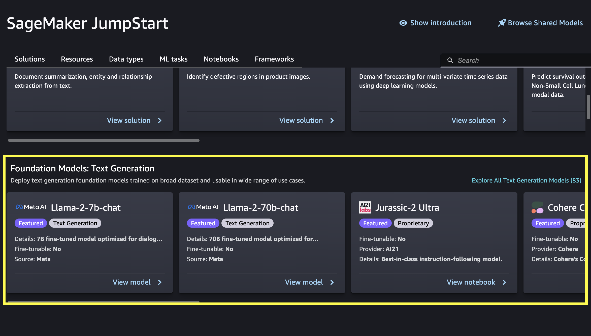

How to use JumpStart foundation models
Choose, train, or deploy foundation models through Amazon SageMaker Studio, use JumpStart foundation models programmatically with the SageMaker Python SDK, and discover JumpStart foundation models directly through the SageMaker console.
Use foundation models in Amazon SageMaker Studio
You can deploy, train, and fine-tune both proprietary and publicly available JumpStart foundation models directly through the Studio UI. To get started with Studio, see Launch Amazon SageMaker Studio.

After opening Amazon SageMaker Studio, choose Models, notebooks, solutions in the SageMaker JumpStart section of the navigation pane. Then, scroll down to find either the Foundation Models: Text Generation or Foundation Models: Image Generation section depending on your use case.
You can choose View model on a suggested foundation model card, or choose Explore All Models to see all available foundation models for either text generation or image generation. If you choose to see all available models, you can further filter available models by task, data type, content type, or framework. You can also search for a model name directly in the Search bar. If you need guidance on selecting a model, see Choose a foundation model.
Important
Some foundation models require explicit acceptance of an end-user license agreement (EULA). For more information, see EULA acceptance in Amazon SageMaker Studio.
After you choose View model for the foundation model of your choice in Studio, you can deploy the model. For more information, see Deploy a Model.
You can also choose Open notebook in the Run in notebook section to run an example notebook for the foundation model directly in Studio.
Note
To deploy a proprietary foundation model in Studio, you must first subscribe to the model in AWS Marketplace. The AWS Marketplace link is provided in the associated example notebook within Studio.
If the model is fine-tunable, you can also fine-tune the model. For more information, see Fine-Tune a Model. For a list of which JumpStart foundation models are fine-tunable, see Fine-tune a foundation model.
Use foundation models with the SageMaker Python SDK
All JumpStart foundation models are available to deploy programmatically using the SageMaker
Python SDK. Proprietary models must be deployed using the model package information
after subscribing to the model in AWS Marketplace, while publicly available
foundation models can be deployed using the model ID in the Built-in Algorithms with pre-trained Model Table
Important
Some foundation models require explicit acceptance of an end-user license agreement (EULA). For more information, see EULA acceptance with the SageMaker Python SDK.
Use proprietary foundation models with the SageMaker Python SDK
Proprietary models must be deployed using the model package information after
subscribing to the model in AWS Marketplace. For more information about SageMaker
and AWS Marketplace, see Buy and Sell Amazon SageMaker
Algorithms and Models in AWS Marketplace. To find AWS Marketplace
links for the latest proprietary models, see Getting started with Amazon SageMaker JumpStart
After subscribing to the model of your choice in AWS Marketplace, you can deploy the foundation model
using the SageMaker Python SDK and the SDK associated with the model provider.
For example, AI21 Labs, Cohere, and LightOn use the "ai21[SM]", cohere-sagemaker, and lightonsage packages, respectively.
For step-by-step examples, find and run the notebook associated with the proprietary foundation model of your choice in SageMaker Studio. See Use foundation models in Amazon SageMaker Studio for more information.
Use publicly available foundation models with the SageMaker Python SDK
For more information on programmatically deploying publicly available JumpStart
foundation models, see Deploy a Pre-Trained Model Directly to a SageMaker Endpoint
To reference available model IDs for publicly available foundation models, see the
Built-in Algorithms with pre-trained Model Table
For example notebooks with detailed steps on using publicly available JumpStart foundation models with the SageMaker Python SDK, see Example notebooks. You can also explore available example notebooks in the SageMaker JumpStart Studio UI.
Discover foundation models in the SageMaker Console
You can explore JumpStart foundation models directly through the Amazon SageMaker Console.
Open the Amazon SageMaker console at https://console.aws.amazon.com/sagemaker/
. Find JumpStart on the left-hand navigation panel and choose Foundation models.
Browse models or search for a specific model. If you need guidance for model selection, see Choose a foundation model. Choose View model to view the model detail page for the foundation model of your choice.
If the model is a proprietary model, choose Subscribe in the upper right-hand corner of the model detail page to subscribe to the model in AWS Marketplace. You should receive an email confirming your subscription to the model of your choice. For more information about SageMaker and AWS Marketplace, see Buy and Sell Amazon SageMaker Algorithms and Models in AWS Marketplace. Publicly available foundation models do not require a subscription.
Note
Proprietary foundation model discoverability is currently in preview in the SageMaker console. Preview access for proprietary foundation models in the console includes playground availability. In the model detail page, choose Playground to test a proprietary model without needing to set up or deploy any model packages.
To view an example notebook in GitHub, choose View code in the upper right-hand corner of the model detail page.
To view and run an example notebook directly in Amazon SageMaker Studio, choose Open notebook in Studio in the upper right-hand corner of the model detail page.